Table of Content 1.Introduction
2.Design
2.1 For desktop
2.2 For responsive
3.Functionality of the website
3.1 Header
3.2 Navigation Bar
3.3 Footer
4.Description about main pages
5.Validation for HTML page
6.Validation for CSS page
7.Experience
8.Conclusion
9.Reference
1.Intoduction
The project of module CSY1018 i.e Web Designing is very fun project.In this assignment, the students must make website about them providing their curriculum-vitae which must contain 6 web-pages.The pages to be included are: Home page, About page, CV page, Social page , Contact page and lastly, Models-gp page which is report.Map of the student's exact location must be included.There are other criterias that must be brought to fruition to achieve one's goal for their website.
Students are obliged to play with their designing skils and show their potential in creating a website. Throughout our first semester we've been provided with all the basic knowledge about HTML and CSS3 properties.We've learned to use animations without the help of Javascript. With the help of the mentor and discussion with group of friends the website is created.The plans for creating website is explained in sequence down below.The brief about website overview and the designs as well as the contents inside the website is also mentioned.All of the instructions are implemented and design constraints are executed making the website very user-friendly.The webpages are responsive according to the required width of the device.Stepping into the technological era we have to be the source of creation. This project helped students to understand that coding not only gives sense of fulfilment but also, the motive to create something out of nothing.
2.Design
Designing phase includes all the color combination for the whole website, content co-ordination for the website to look attractive, margins to make it user-friendly and many other rules like use of eye-friendly color codes.The designs for all pages differs from each other. All the margins are managed and sections are divided to align items in a proper way just like the wire-frames(i.e. reference for the web-site sketched by pencil or digital wireframes from ms-word/paint.)
2.1 For desktop
2.1.1 Design for Home page
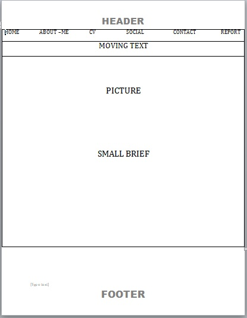
2.1.2 Design for About page
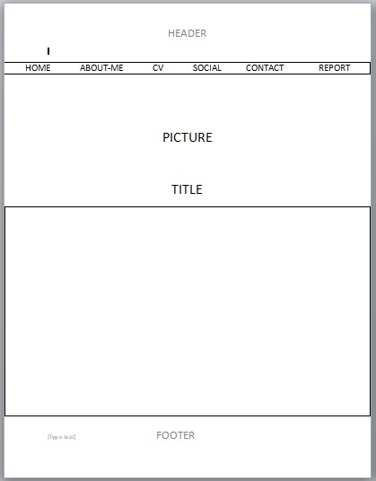
2.1.3 Design for CV page
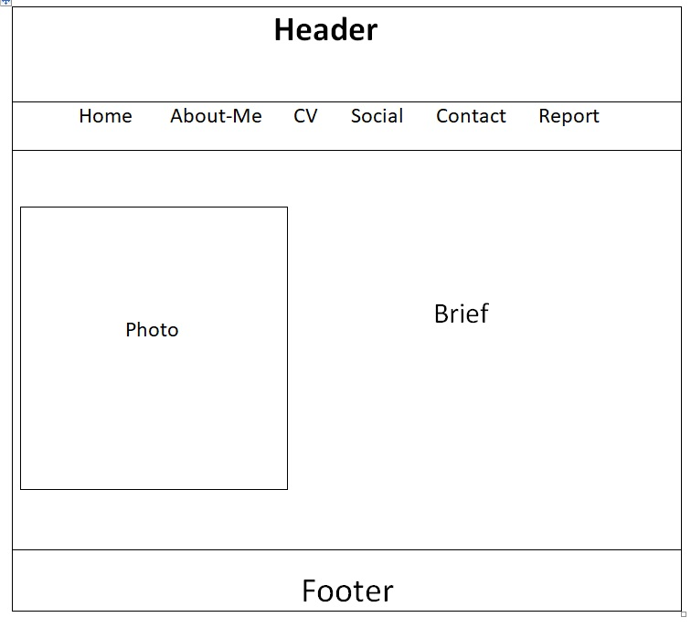
2.1.4 Design for Social page
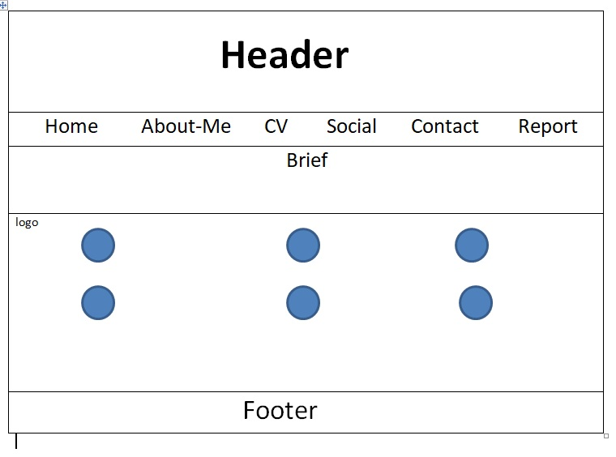
2.1.5 Design for Contact page
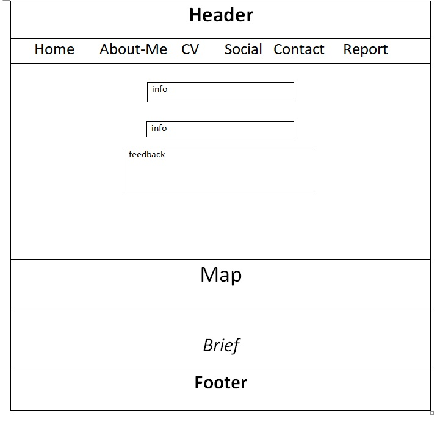
2.2 For responsive
2.2.1 Design for responsive about Home page
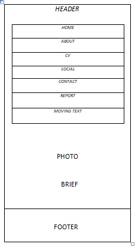
2.2.2 Design for responsive About page
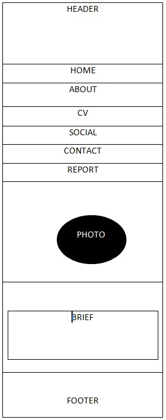
2.2.3 Design for responsive CV page
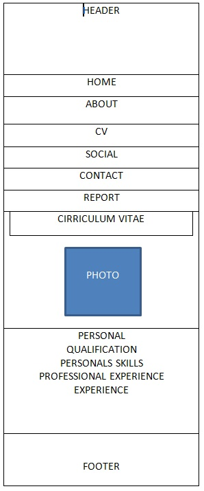
2.2.4 Design for responsive Social page
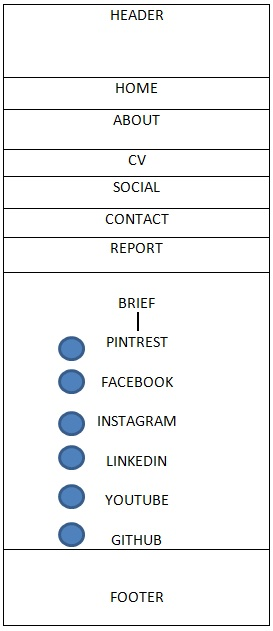
2.2.5 Design for responsive Contact page
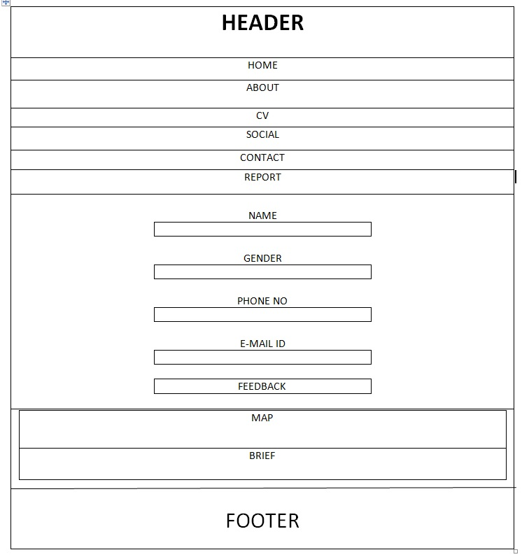
3. Functionality of the Web-site
The brief about each section from header to footer are discussed in this section. The screenshots of the header,navigation bar and footer will be used to make briefings more clear. All of the functions will be explained respectively down below:
3.1 Header
In header part,layout was used as a background and the title of height 80px is maintained. Google font "Fredericka the Great" is used to make it fascinating. Along with the title, logos of different social media like Facebook, Instagram and Pinterest is adjusted. They are directly linked with their official pages.
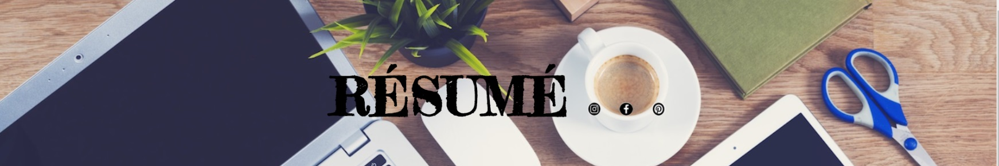
3.2 Navigation Bar
In navigation part, all the pages are mentioned which is linked directly with their respective part. Everytime, one of the list is clicked ,it opens into the new page. The design is maintained in a very user-friendly manner. When cursor is hovered around the navigation bar the background turns to black to display which part is being selected.
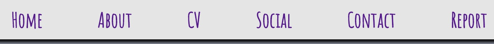
3.3 Footer
In footer part, copyright is mentioned with the developer name and the date of publish.It also gives mail address for letting people contact the developer for any business purpose.For the background,the layout related with header is used.
3.4 Header in responsive view
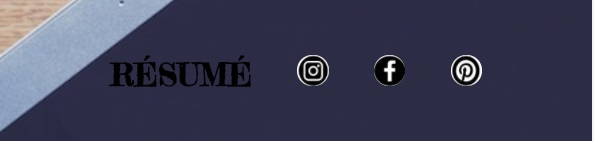
3.4 Navigation in responsive view
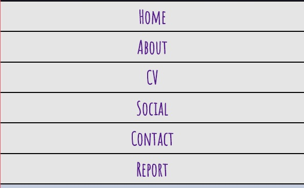
3.4 Footer in responsive view
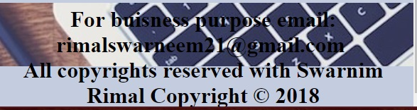
4. Description about main pages
4.1 Home Page
Home page basically is the landing page of the website. It contains image of the developer and it acknowledges him/her.
4.2 About Page
About page is the second page of the wesite. It provides basic over-view of the developer.
4.3 CV Page
CV is the most-important part of the web-site. It holds personal information, qualification,skills and experiences of the developer.It is the official bio-data.
4.4 Social Page
Social page is filled with different social medias that the developer is active on present context.It contains link to profile of him/her on listed social sites.
4.5 Contact page
Contact page is the page which contains area to provide feedback and the location of the developer along with the information about the address.
5.Validation for HTML page
W3C validator was used to check the errors in codes in html pages.Warning was shown which was corrected to get error-free code.
6.Validation for CSS page
W3C validator was used to check the errors in codes in CSS file.No error was detected.
7.Experience
My experience while working on this project was a work-in-progress. I had to start from the very basic because this was the first time I had come across HTML. I had to go through research, slides and thoroughly read the book related to HTML as well as CSS rules.From tags to attributes and from background-image to opacity, I learnt the functions and used it need-wise in my assignment.I was finding it hard to work with padding and margin.Also, while I had to make all of the pages responsive none of the pages were user-friendly with other devices having smaller-width. I had to work in padding for two days straight to make it work.Lastly, I became very familiar with web-site making. I am now able to make basic web-pages without any problem.
8. Conclusion
The students had to work with various tags and css styles inside the html page which were taught by the mentor over the time-period of three months.It was very practical based assignment. The positive aspect is that students will now have idea to create basic web-site without having any problem.The assigments like this will help student prepare for the real-world. W3school.org was a great help in over-coming problems and adding more styles except those mentioned in our course.Going-through slides provided by the University was also very effective.
If there was enough time, more animations would have been added along with drop down list and transtions in images.Due to lack of practice and less knowledge about these google material design,they weren't added.In coming days,the students will have gained deeper knowledge on this course and the practice carried out in this assignmnet will minimize the errors.
9.Reference
Mason,JM(2017)Why Responsive Design Fails[online]. Available from:https://medium.com/@iammarkjmason/why-responsive-design-fails-35a5e18b824.[Accessed Date:13th April]
Toptal designers(2017)HTML by Toptal designers[online].Available from:https://www.toptal.com/designers/htmlarrows/symbols/white-smiling-face/.[Accessed Date:15th April]
Digirank(2018)Why Social Media Is Important[online]. Available from:https://www.digirank.co.uk/insights/why-social-media-is-important/.[Accessed Date:10th April]
W3.CSS(1999-2018) CSS:hover Selector[online]. Available from:https://www.w3schools.com/cssref/sel_hover.asp. [Accessed Date:10th April]
Vector Stock Media(2018)Set of popular social media logos web icon vector image[online].Available from:https://www.vectorstock.com/royalty-free-vector/set-of-popular-social-media-logos-web-icon-vector-16916695. [Accessed Date:1st April]